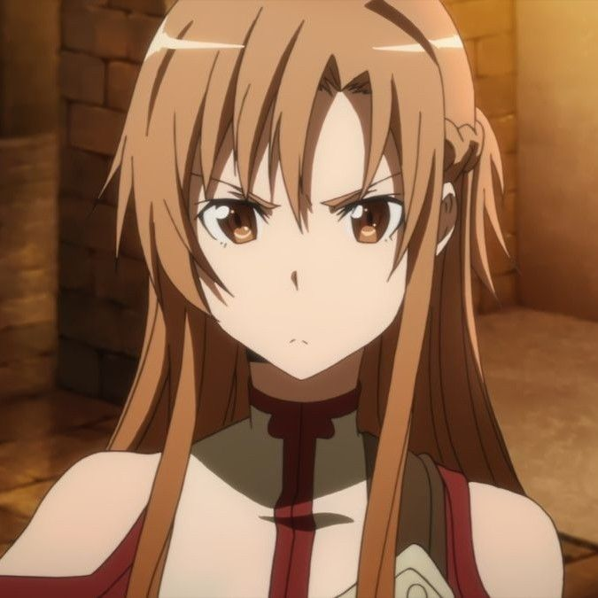
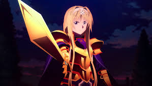
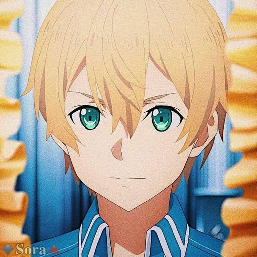
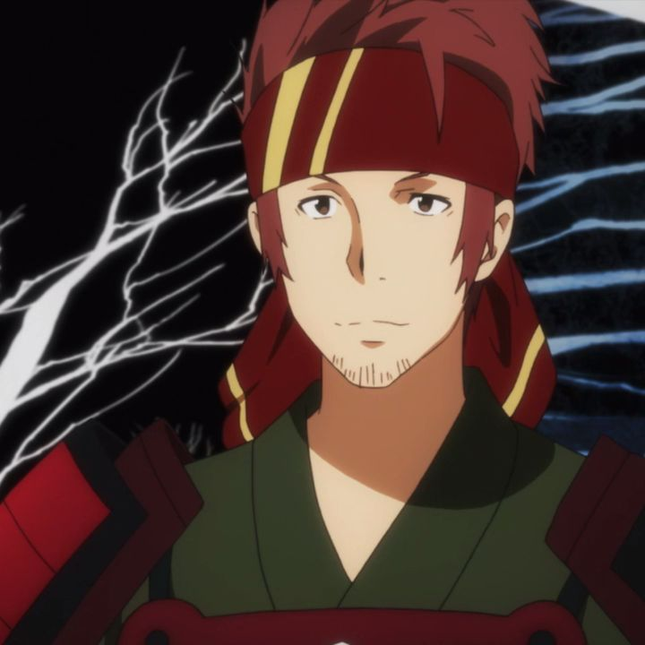
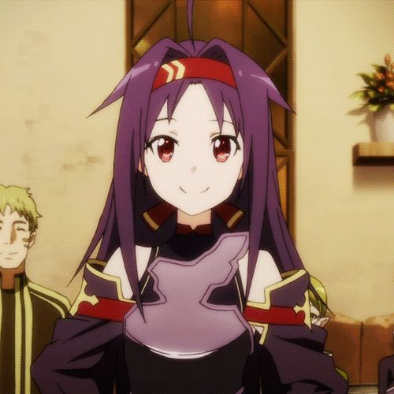

Kazuto Kirigaya “Kirito”
El Espadachín Negro que desafió los 100 pisos de Aincrad.
S/180.00

Asuna Yuuki “Asuna”
La Relámpago del Bosque, una guerrera veloz y de corazón noble.
S/160.00

Shino Asada “Sinon”
Francotiradora letal de GGO, símbolo de precisión y valentía.
S/150.00

Alice Zuberg “Alice Synthesis Thirty”
Caballera de la Integridad, guardiana de la justicia y la fe.
S/170.00

Eugeo “El Espadachín del Hielo Azul”
Amigo y compañero fiel de Kirito, portador de la Blue Rose Sword.
S/140.00

Ryoutarou Tsuboi “Klein”
Guerrero leal y alegre, siempre dispuesto a luchar junto a sus amigos.
S/120.00

Yuuki Konno "Mother's Rosario".
La más rápida de todas, símbolo de esperanza y fuerza interior.
S/160.00